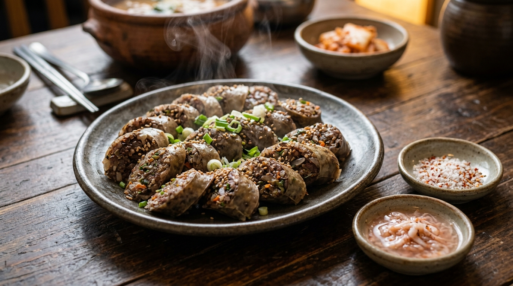
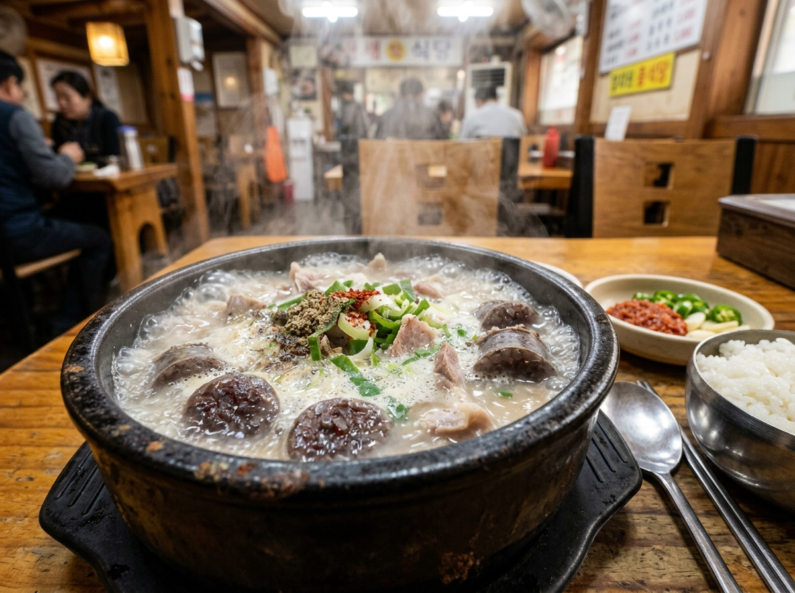
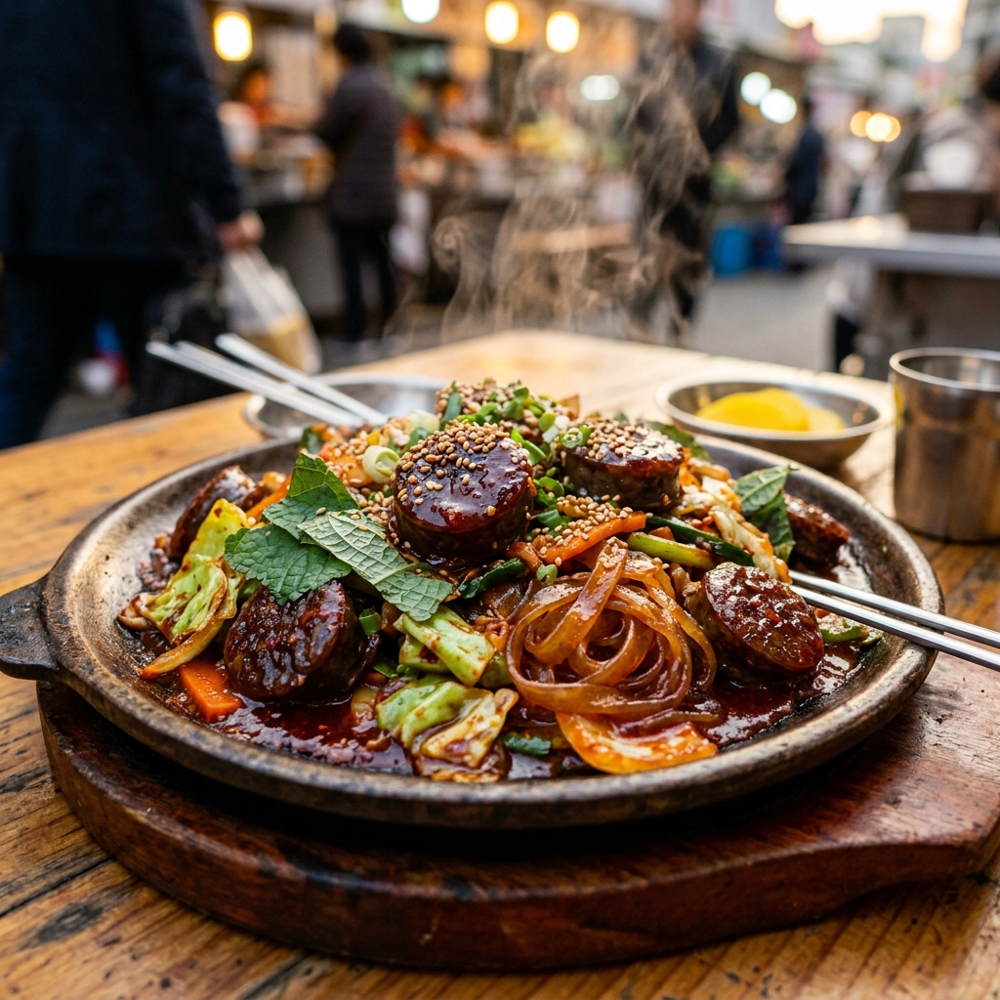

더푸른식품 순대 쇼핑몰 구축 제안서
엔터프라이즈급 비즈니스 및 기술 구축 제안서

1. 프로젝트 비즈니스 비전
- 순대 시장은 밀키트 및 온라인 HMR 시장으로 빠르게 확대 중
- ODM 제휴를 통해 리스크를 최소화하고 브랜딩에 집중
- 미니멀하고 친환경적인 패키징으로 B2C 고객에게 신뢰 전달
2. ODM 상호 홍보(윈윈) 모델
- 제조업체 (ODM 공장): HACCP 위생 설비 및 공정 제공
- 판매 브랜드: 공장의 청결 공정을 홈페이지 전면에 투명하게 홍보하여 소비자 신뢰 획득
3. 타겟 메뉴 및 시각적 브랜딩

모둠 순대국 (HMR 밀키트)

순대 꼬치 & 볶음 (스트리트 푸드)
4. 엔터프라이즈 아키텍처
- 결제 무결성 보장 (2PC & S2S): Two-Phase Commit 패턴, 서버 간 웹훅 검증, 멱등성 키 적용
- 오프라인 PWA 결제 동기화: 매장 내 QR 결제 시 Server-Sent Events(SSE)로 실시간 상태 푸시
- 계약 소유권 방어: 소스코드, 도메인, DB 등 100% 자사 귀속으로 벤더 락인 방지
5. 검색 가능성 극대화
- SEO: JSON-LD 스키마 (Product, LocalBusiness) 및 시맨틱 마크업
- AEO: LLM 답변에 특화된 Q&A 형태의 지식 구조화
- GEO: 보도자료, 위생 성적서 등 공신력 있는 출처 인용 연계